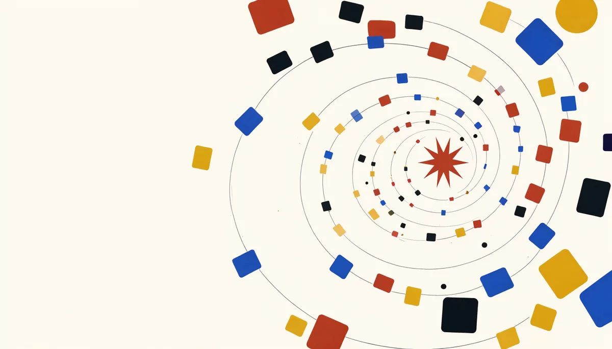
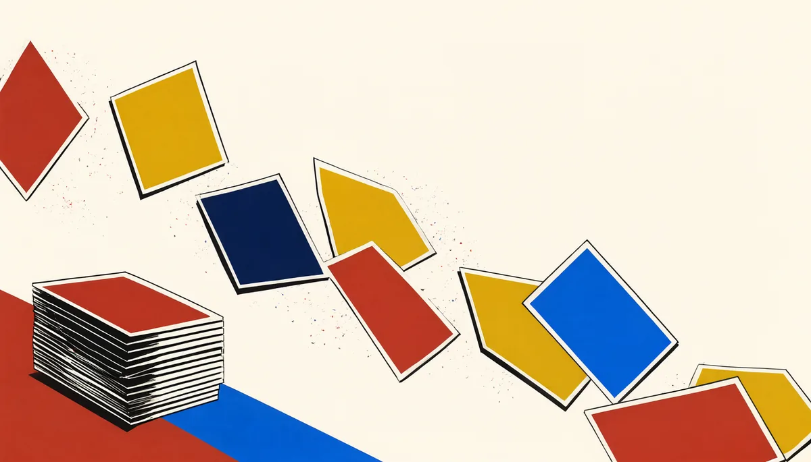
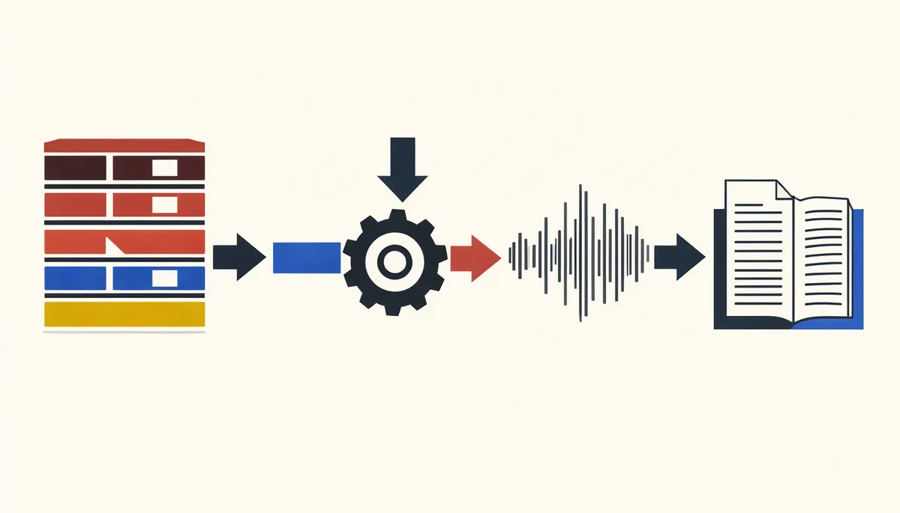
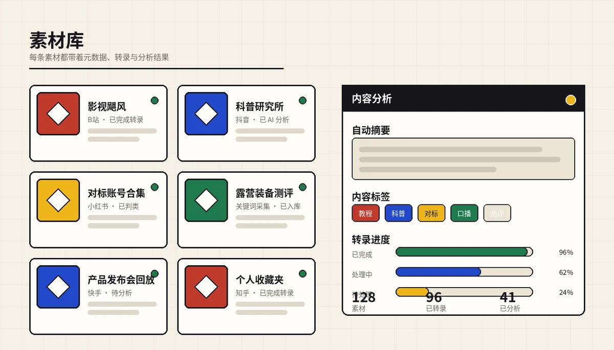

收藏夹越来越满，回看率越来越低
刷到有用的视频先点收藏，想着以后再看。平台推荐流一换，连自己收藏过什么都忘了。
刷抖音、B站、小红书时收藏的教程、科普和对标视频，过一阵就找不到了。 星采把喜欢的博主、收藏和点赞自动归集到本地，下载、转成文字、做 AI 拆解， 最后沉淀成一套 真正用得上、能喂给你自己模型的内容知识库。

信息从来不缺，缺的是留下来、用起来。散在各平台的收藏，最后只是又一个没人翻的抽屉。
刷到有用的视频先点收藏，想着以后再看。平台推荐流一换，连自己收藏过什么都忘了。
抖音、B站、小红书、快手、知乎、公众号各有各的收藏夹，没有一处能统一查看和管理。
想做选题、做对标、喂给自己的模型，却只能人工复制标题、听写内容、整理成表格。

你只需要登录一次平台账号、打开要跟踪的博主或收藏夹，后面的下载、转录、分析和归档交给后台队列。
导入你关注的博主，或打开收藏、点赞同步开关。
→按小时、天或周检查新内容，也支持关键词采集。
→视频、封面、元数据进入你自己的存储目录。
→本地 faster-whisper 转录，生成可搜索的全文。
→摘要、标签、内容判类，以及对标账号爆款拆解。
→素材、转录、分析一处管理，可筛选、可导出。
→让 Claude Code、Codex 或你自己的 Agent 直接调用。

账号、订阅、采集、下载、转录、分析、导出、开放接口，全部在一个工作台里闭环。
B站、抖音、小红书、快手、知乎、公众号，扫码或 Cookie，定时体检掉线。
01导入关注列表，逐博主控制是否同步其名下视频，新作品自动进入素材库。
02先导入，再按需打开同步开关。不想同步哪一类就关掉，边界清楚。
03选平台、排序、单次上限和采集周期，支持热度门槛与评论抓取。
04视频和封面下载到本地存储根，按账号、订阅和模板组织目录。
05faster-whisper 生成分段与全文，视频从此变成可搜索、可引用的文本。
06接任意 OpenAI 兼容模型，对转录全文做摘要、标签和自动分型。
07结合元数据、转录、视频理解和评论摘要，输出结构化拆解报告。
08按平台、账号、分类和状态筛选，支持导出 Markdown 与 JSON。
09下载、转录、分析、采集、评论抓取都有独立状态和失败原因。
10API Key 带权限范围和限流，MCP 一行配置接进 Claude Code 或 Codex。
11AES-256-GCM 加密存储，前端与 API 永远只返回脱敏值。
12星采把采集、下载、转录、清洗和结构化这些脏活做完，再通过 API 和 MCP 交给你自己的模型或 Agent。你决定用什么模型、数据存在哪里、哪些内容可以出内网。
# 把星采接进你的 AI 客户端 [mcp_servers.stargather] command = "uv" args = ["run", "python", "-m", "mcp_server.server"] cwd = "/path/to/platform-api" [mcp_servers.stargather.env] PLATFORM_API_BASE = "http://127.0.0.1:9100" PLATFORM_API_KEY = "sk-你的key"

平台对外只有一套 /api/* 接口。
网页工作台、MCP、外部 HTTP 客户端走的是同一套能力，没有「只有网页能做」的操作。
用 API Key 鉴权，按 scope 控权，每一次调用都落审计日志。
标准 REST 接口，任何语言都能调。搜索素材、取转录全文、触发同步、跑采集、导出 Markdown / JSON。
本地 stdio 进程，一行配置接进 Claude Code / Codex。AI 客户端可以直接把平台当成工具用。
网页里能点的，API 也能调。不会出现「这个功能只能手动操作」的黑洞。
给不同的 Agent 发不同的 Key，各管各的权限和限流，出问题只吊销一把。
查账号状态、搜素材、读转录、看数据看板、导出内容。适合只做分析的 Agent。
在只读之上，可建采集任务、触发同步、扫码登录、导入文章。适合能自己找素材的 Agent。
额外可改系统设置。默认不建议给常驻 Agent，留给运维账号。
list_accounts 账号列表
check_account 账号体检
search_assets 搜索素材
get_transcript 取转录
list_followed_creators 关注博主
get_analytics 数据看板
export_assets 导出内容
create_crawl_task 建采集任务
trigger_sync 触发同步
start_qr_login 扫码登录
poll_qr_login 轮询登录
update_cookie 更新凭证
import_article 导入文章
list_crawl_tasks 采集任务
星采不是一个要你注册账号的 SaaS。它交付的是一套可以自己部署、自己掌控的软件：数据库在你这里，素材在你这里，平台凭证也在你这里。
不是。星采只提供私有化部署，不提供统一线上服务，也不需要注册。你可以先打开在线演示看看完整界面与数据形态，再把它部署到自己的电脑、服务器或内网环境里。
产品免费。采集、下载、转录、素材库、API / MCP 这些能力都在你部署的实例里运行。AI 分析需要模型，你可以接自己的 OpenAI 兼容接口，也可以使用本地模型。
支持 Linux、macOS、Windows 单机部署。首选 Docker Compose，数据库使用 PostgreSQL；开发时 SQLite 也可以作为本地简化方案。预处理视频需要 ffmpeg，本地转录需要 faster-whisper 模型。
登录你自己的平台账号后，星采会通过平台的原生接口或浏览器流程读取你的关注列表、收藏夹和作品数据。凭证使用 AES-256-GCM 加密存储，接口和前端只返回脱敏值。
关键词采集同样需要对应平台的登录态，因为平台接口要求已登录。你可以创建一个专用账号，只在星采里用于采集，避免影响主账号。
不会。默认只有达到热度门槛的作品才触发评论抓取，抓取页数、条数和频率都可以配置，避免对平台造成不必要的压力。
可以。在「AI 接入」页创建带权限范围的 API Key，然后通过 HTTP API 或 MCP 调用。常用能力包括搜索素材、获取转录全文、触发同步、运行采集和导出。
星采是免费、可私有化部署的项目。部署卡住了、想聊聊自己的采集场景、 或者看看别人怎么用——都可以进群。产品免费，群里也没有推销。
群内不欢迎广告与无关推广，只聊星采和内容采集相关的事。
ai联众-王（xsai5.xyz）
扫码加我 · 备注「星采」拉你进交流群
长按二维码，点「识别图中二维码」 长按保存二维码，再到微信「扫一扫 → 相册」里选它 请打开手机微信，用「扫一扫」扫描屏幕上的二维码加我微信并备注「星采」，我会拉你进交流群。
加好友时备注「星采」，方便我第一时间拉你进群。